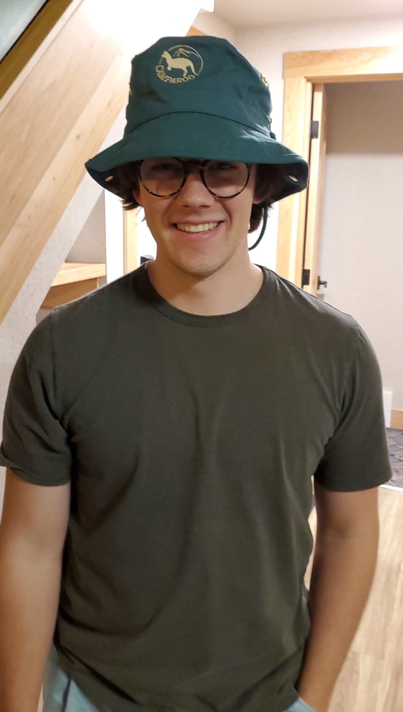

Erik Lamoureux
This page is in progress. Stay tuned for updates.

About Me
I am a PhD student in Mechanical Engineering at the University of British Columbia, Vancouver. My research involves using deep learning and computer vision techniques to assess single biological cells. This work is mutli-disciplinary as I use mechatronics (mechanical, electrical, and computer) engineering techniques to answer biomedical research questions.
LinkedIn
GitHub
Doctoral Projects
1.0 Red Blood Cell (RBC) Quality for Transfusion
1.1 Deep Learning to Determine RBC Deformability
1.2 Deep Learning to Determine RBC Storage Duration
1.3 Predicting Transfusion Lifetime in a Clinical Study
2.0 Sperm Assessment for Male Reproduction
2.1 Deep Learning to Identify Rare Sperm
2.2 Deep Learning to Assess Sperm DNA Fragmentation
Mechatronics
Microfluidics
Computer Vision
Deep Learning
Publications
Curriculum Vitae
Contact